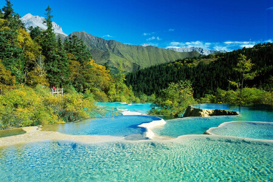

Attraction introduction
Jiuzhaigou is located in Zhangzha Town, Jiuzhaigou County, Aba Tibetan and Qiang Autonomous Prefecture, in the southern section of the Minshan Mountains in the northwest of Sichuan Province, on the northeast side of Gonggan Ridge in the southern section of the Minshan Mountains. More than 400 kilometers away from Chengdu, it is a large branch ditch at the source of Baishui River in the upper reaches of Jialing River in the Yangtze River system. The terrain of Jiuzhaigou Nature Reserve is high in the south and low in the north, with deep valleys and great differences in elevation. The mouth of Jiuzhaigou on the northern edge is only 2,000 meters above sea level, the peaks and mountains in the middle are all above 4,000 meters, and the southern edge is over 4,500 meters. The main ditch is more than 30 kilometers long.
Jiuzhaigou is a world natural heritage, a national key scenic spot, a national AAAAA-level tourist attraction, a national nature reserve, a national geological park, and a network of world biosphere reserves. It is also the first nature reserve in China whose main purpose is to protect natural scenery.

Spring
Summer
Fall
Winter